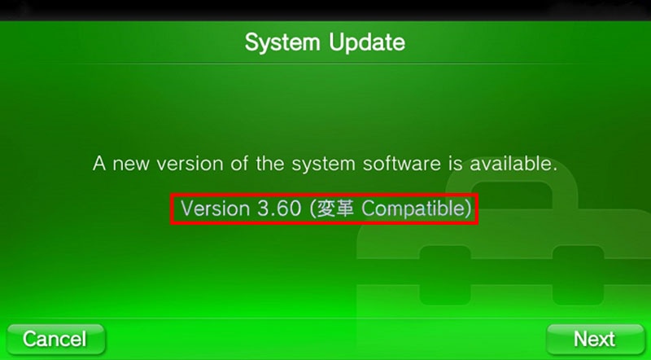

Unforunately, you can only run HENkaku on version 3.60. Fortunately for us who are below that version, there’s now a super easy method which allows us to update without going to the latest version.

Instructions
- Open the Settings application
- Select Network > Wi-Fi Settings > Advanced Settings > DNS Settings
- Make sure you are connected to the internet
- Make sure Proxy Server is set to Do Not Use
- Choose Manual
- Change your Primary DNS to
212.47.229.76- Leave your Secondary DNS blank
- Go back to the main Settings screen and select System Update > Update Using Wi-Fi
- Be absolutely certain that the message says “3.60 (変革 Compatible)”
- Update your system to 3.60